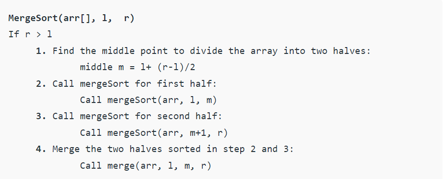

Merge sort is similar to the quick sort algorithm as it uses the divide and conquer approach to sort the elements. It is one of the most popular and efficient sorting algorithm. It divides the given list into two equal halves, calls itself for the two halves and then merges the two sorted halves. We have to define the merge() function to perform the merging.
The sub-lists are divided again and again into halves until the list cannot be divided further. Then we combine the pair of one element lists into two-element lists, sorting them in the process. The sorted two-element pairs is merged into the four-element lists, and so on until we get the sorted list.
Pseudo code
The important part of the merge sort is the MERGE function. This function performs the merging of two sorted sub-arrays that are A[beg…mid] and A[mid+1…end], to build one sorted array A[beg…end]. So, the inputs of the MERGE function are A[], beg, mid, and end.
Time complexity
1) Best Case Complexity - It occurs when there is no sorting required, i.e. the array is already sorted. The best-case time complexity of merge sort is O(n*logn).
2) Average Case Complexity - It occurs when the array elements are in jumbled order that is not properly ascending and not properly descending. The average case time complexity of merge sort is O(n*logn).
3) Worst Case Complexity - It occurs when the array elements are required to be sorted in reverse order. That means suppose you have to sort the array elements in ascending order, but its elements are in descending order. The worst-case time complexity of merge sort is O(n*logn).